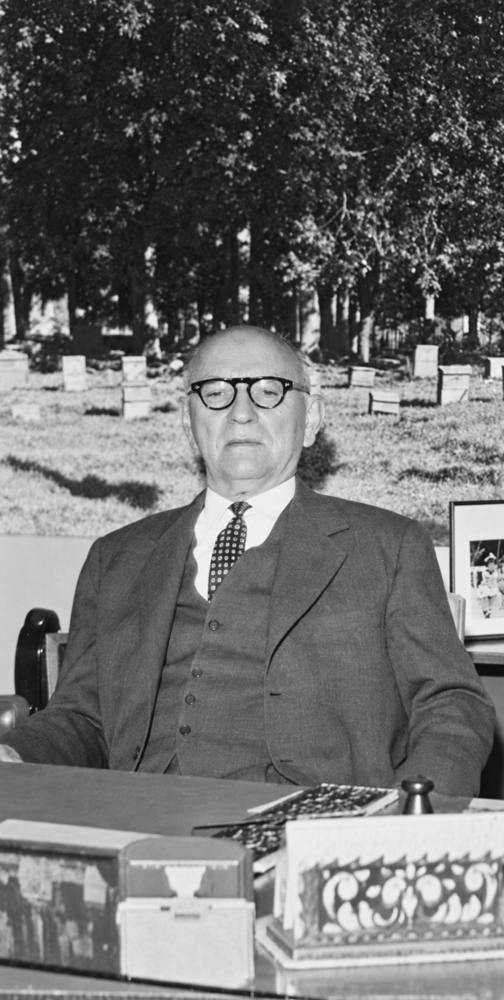

Miel y cera cubanas
Una actividad comercial desarrollada tanto en el mercado nacional como en el internacional.
Cera y miel de abejas · Camagüey, Cuba
Desde 1923, Leoncio Benito y Compañía compraba miel y cera a apicultores cubanos, las procesaba en Camagüey y las comercializaba en Cuba y en el extranjero.

Una actividad comercial desarrollada tanto en el mercado nacional como en el internacional.
La producción llegaba de Camagüey y de otras provincias de la isla.
La firma instaló una planta procesadora de miel con maquinaria llegada desde Nueva York.

Procesado y calidad
La planta de San Ramón 206 se equipó con maquinaria adquirida en Nueva York y recibida por el puerto de Nuevitas.
Desde allí, la empresa procesaba miel y cera de proveedores cubanos con exigencias de calidad elevadas para su época.
Cómo trabajaba la empresaIdentidad documentada
Las letras de cambio conservan la imagen comercial de la firma. El expediente de marca describe fondos blancos y sepia, un logotipo negro y el relieve gris de sus letras.
«Fondos de blanco y sepia, color logotipo negro con relieve de letras grises».
La marca fue registrada posteriormente por José Agustín Benito Menéndez, sobrino de Leoncio Benito.
Consultar el expediente M2938976 en la OEPM Ver la letra de cambio original